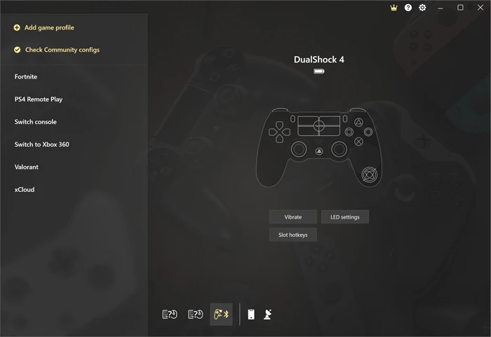
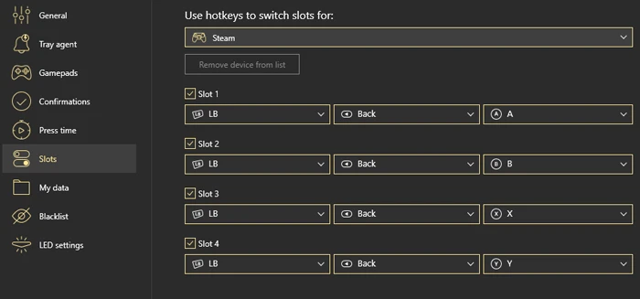

reWASD 上手三天：我为什么把手柄映射玩出了新高度
从一个只想用手柄玩键鼠游戏的普通玩家出发，聊 reWASD 到底能带来什么真实变化——映射准不准、切换爽不爽、值不值掏这个钱。
说实话，我一开始装 reWASD 就是奔着一个朴素的诉求去的：我有一只 Xbox 手柄，但我玩的那几款游戏——说的就是你，《Valorant》和《GTA Online》——键鼠体验明显更顺。于是网上一搜，"手柄转键盘"五个字排在最前面的就是 reWASD官网。安装包从下载拿，插上手柄，前后花了不到两分钟。
第一眼：界面比想象的要友好
启动界面没有让我立刻懵掉。左边是设备面板，手柄一插就自动出现在列表里，选中之后中间那块区域就是我要打交道的主战场——按键映射表。最上面一排按钮分得很清楚，新建配置、保存、Apply，每个动作都有明确的结果预期。

我以为"手柄转键盘"就是把左摇杆推一下、选 W/A/S/D 完事。实际操作起来比我想的要丝滑：reWASD 提供了「捕获手柄按键」的开关，打开之后我只要按一下实物摇杆，列表里就自动跳出来对应的方向项，根本不用在一堆设备条目里翻找。选好按键，右边下拉框选键盘分组里的键，四步——选、分配、Apply、开记事本验证——一气呵成。
但真正让我惊艳的是几个"多余"功能
基础映射做好之后，我以为这就是 reWASD 的全部价值了。直到我在一个周末深更半夜翻它的设置面板，发现了几个我以为用不上、用上之后就回不去的东西。
Slots 插槽：一个手柄伺候四款游戏
我平时手柄主要用来玩 FPS、RPG、赛车和模拟器，四款游戏对按键布局的需求完全不一样。FPS 需要左摇杆 WASD、右摇杆鼠标、扳机开火；RPG 里右手可能要处理一串技能快捷键；赛车摇杆的死区和曲线得重新调；模拟器干脆得让手柄承担大部分键鼠功能。
之前我的做法是每次换游戏就进 reWASD 改配置、Apply。改一次五分钟，切游戏频繁的话来回折腾很烦人。
Slots 解决了这个。它允许你把四份配置同时挂到一只手柄上，然后用一个热键循环切换。我把 View+Menu 组合设成了切换键——这两个键在我玩的游戏里几乎不会被同时用到，冲突风险为零。按一下 View+Menu，当前配置就从 FPS 跳到 RPG，再过一下切到赛车。整个过程不到一秒，托盘图标里有个小数字提示我现在挂的是哪套。
更爽的是配合自动检测。reWASD 能识别当前前台运行的是哪款游戏，然后自动挂上你预绑定的插槽。我现在换游戏根本不用碰 reWASD，连托盘都不用看——进了 GTA 是 GTA 的配置，切回 Valorant 自动换成 FPS 布局。这玩意儿我用了一周，没出错过一次。

设备分组：让手柄和鼠标变成一只"超级输入设备"
这个功能我发现得更晚。玩第三人称射击的时候，我习惯用手柄左摇杆移动、但准星微调还是鼠标来得准。reWASD 默认情况下手柄和鼠标各管各的，映射表也是分开的——我想设一个"手柄 LB + 鼠标右键"的组合键触发某个动作，根本找不到地方。
直到我偶然点了下设备面板里的 Group 入口。勾选手柄和鼠标打勾确认之后，整个设备组就以一个逻辑设备的形态出现在配置列表里了。组合键的参与者可以是手柄 LB + 鼠标右键，层切换的跳转键可以放在键盘上。这一下就把跨设备操作的墙给打通了。
唯一让我心里有点犯嘀咕的是稳定性。reWASD 升级后分组偶尔会丢——社区里挺多人遇到过。官方建议用软件内升级而不是卸载重装，我试了几次目前还没出过问题，但保险起见配置还是得定期导出备份一份。
社区配置：别人调好的方案拿来主义
我是个典型的懒人，能不自己从零搭配置就不想从零搭。reWASD 内置社区功能，热门游戏下面挂着成百上千份玩家上传的配置。我玩《GTA Online》时就直接找了一份下载量最高的开车专用配置，导入进软件就能用——摇杆曲线、刹车灵敏度、视角这些都已经调得很合适了。
当然不是说社区配置拿来就完美。每个人的手感不一样，别人习惯的按键布局我未必顺手，导入之后过一遍映射表、把几个高频键改成自己习惯的样子，两分钟的事。而且看高分配置本身就是学进阶技巧的最快方式——为什么这一项挂了双击激活器、为什么瞄准层单独一条响应曲线，看不懂的术语翻一下reWASD文档就能补课，比自己瞎试效率高太多。
适合谁、不适合谁
如果你的核心诉求就是"让手柄模拟键盘鼠标"，那 reWASD 是目前这块领域里体验最成熟的选择。界面干净、操作直觉、社区活跃，基础功能完全免费就能用，想玩 Slots、连招、多层这些进阶功能再考虑完整版也不迟。
但说实话它不是什么人都需要的。如果你只玩主机游戏、或者你的 PC 游戏本身就原生支持手柄且键位够用，那你可能永远找不到装它的理由。还有一点要提——reWASD 只支持 Windows，Mac 玩家不用往下看了。
收尾
我现在 reWASD 开机自启，托盘里常驻一个小图标，换游戏时它在后台默默帮我切配置。说起来好像也没什么特别惊艳的功能，但就是这种"装上之后就再也感觉不到它的存在"的软件，才是真的好用。顺带一提，上面提到的这套入门资料我分别放在了 GitHub、Gitee 和 GitCode，国内访问哪个快你就用哪个。